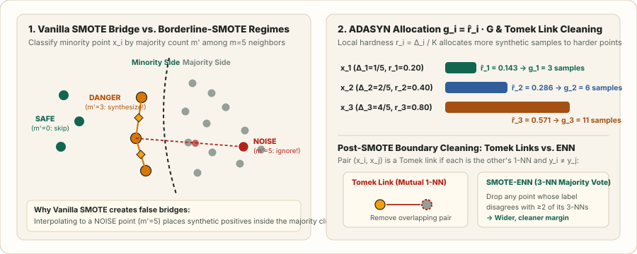

SMOTE, Borderline-SMOTE, and ADASYN: Geometry of $k$-NN Minority Synthesis
Why repeating minority samples carves tight memorization islands, how SMOTE interpolates along $k$-NN line segments, why noisy minority outliers create false bridges across the majority class, and how Borderline-SMOTE, ADASYN, and Tomek Links fix it.
In Chapter 02, we saw that pure class-balanced oversampling ($q=0$) repeats each tail example $37\times$ per epoch on a $(1000,100,10)$ dataset. Repeating the exact same coordinate vector $x_i$ adds zero geometric volume: a high-capacity classifier simply shrinks its decision boundary into tiny islands around the duplicated points. Chawla et al. (2002) introduced SMOTE (Synthetic Minority Over-sampling Technique) to fill the local convex hull of minority neighborhoods instead of cloning points.
1. Vanilla SMOTE: $k$-NN line-segment synthesis and covariance contraction
Let $\mathcal D_{\min}=\{x_1,\dots,x_{n_{\min}}\}\subset\mathbb R^d$ be the minority training set. For a given anchor $x_i\in\mathcal D_{\min}$, Vanilla SMOTE finds its $k$ nearest neighbors within $\mathcal D_{\min}$ only (typically $k=5$ under Euclidean distance), randomly picks one minority neighbor $x_{i,r}\in\mathcal N_k^{\min}(x_i)$, draws $u\sim\operatorname{Uniform}(0,1)$, and synthesizes:
What are the mean and covariance of $\tilde x$ conditioned on the pair $(x_i,x_{i,r})$? Since $\mathbb E[u]=\tfrac12$ and $\operatorname{Var}(u)=\tfrac1{12}$:
Unconditionally across a locally isotropic neighborhood with covariance $\Sigma_{\min}$, convex combinations satisfy $\operatorname{Cov}((1-u)X_1+uX_2)=\mathbb E[(1-u)^2+u^2]\Sigma_{\min}=\frac{2}{3}\Sigma_{\min}$. That is, Vanilla SMOTE contracts intra-cluster variance by $1/3$ and only populates the $1$-dimensional line segments connecting existing minority vertices—never expanding outward normal to the local $k$-NN simplex.
2. Worked 2D numerical example: Vanilla SMOTE vs. the Bridge Problem
Suppose we have four minority points in $\mathbb R^2$: three form a clean cluster on the left—$x_1=(1.0,2.0)$, $x_2=(1.4,2.6)$, $x_3=(1.8,1.8)$—and one noisy minority point $x_4=(5.0,2.2)$ sits deep inside the majority cluster centered around $(3.5,2.2)$. With $k=2$ minority neighbors:
- For $x_3=(1.8,1.8)$, distances to the other minority points are $\|x_3-x_1\|_2=\sqrt{0.64+0.04}=0.825$, $\|x_3-x_2\|_2=\sqrt{0.16+0.64}=0.894$, and $\|x_3-x_4\|_2=\sqrt{10.24+0.16}=3.225$. Its $2$-NNs are $\{x_1,x_2\}$—safe interior synthesis.
- For the outlier $x_4=(5.0,2.2)$, however, its $2$ nearest minority neighbors are $x_3=(1.8,1.8)$ and $x_2=(1.4,2.6)$ because Vanilla SMOTE ignores majority points when computing neighbors! With $u=0.5$ toward $x_3$:
The synthetic positive $\tilde x_{\text{bridge}}=(3.4,2.0)$ lands directly in the center of the majority class! This is the classic line-bridge (over-generalization) pathology of Vanilla SMOTE.

3. Borderline-SMOTE: Safe, Danger, and Noise classification
Han, Wang, and Mao (2005) observed that interior minority points do not move the decision boundary, while isolated minority points surrounded by majority points are label or sensor noise. For each minority example $x_i\in\mathcal D_{\min}$, Borderline-SMOTE first finds its $m$ nearest neighbors across the entire combined dataset $\mathcal D=\mathcal D_{\min}\cup\mathcal D_{\text{maj}}$ (typically $m=5$) and counts how many of those $m$ neighbors belong to the majority class, denoted $m'\in\{0,1,\dots,m\}$:
- Borderline-SMOTE1: For each $x_i\in\text{DANGER}$, interpolates between $x_i$ and its $k$ nearest minority neighbors $x_{i,r}\in\mathcal N_k^{\min}(x_i)$ with $u\sim\operatorname{Uniform}(0,1)$.
- Borderline-SMOTE2: Also interpolates between $x_i\in\text{DANGER}$ and its nearest majority neighbor $x_{i,\text{maj}}$, but restricts the step size to $u\sim\operatorname{Uniform}(0,0.5)$ so the synthetic point stays on the minority side of the midpoint.
4. ADASYN: Adaptive density-weighted synthesis
Instead of a hard step function at $m/2$, He et al. (2008) proposed ADASYN (Adaptive Synthetic Sampling), which allocates a continuous budget of synthetic points proportional to local learning difficulty. Given $n_{\min}$ minority samples, $n_{\text{maj}}$ majority samples, and target balance level $\beta\in(0,1]$, the total synthetic budget is $G=(n_{\text{maj}}-n_{\min})\beta$. For each $x_i\in\mathcal D_{\min}$:
where $\Delta_i$ is the number of majority examples among the $K$ all-class nearest neighbors of $x_i$. Consider $n_{\min}=3$ minority points with $K=5$ all-class neighbors and total budget $G=20$:
| Minority Anchor $x_i$ | Majority Neighbors $\Delta_i$ | Local Ratio $r_i=\Delta_i/5$ | Normalized Weight $\hat r_i=r_i/\sum r_j$ | Synthetic Count $g_i=\operatorname{round}(\hat r_i\cdot 20)$ |
|---|---|---|---|---|
| $x_1$ (mostly minority neighborhood) | $1$ | $0.20$ | $0.20 / 1.40 = 0.1429$ | $\operatorname{round}(2.86) = \mathbf{3}$ |
| $x_2$ (moderate boundary) | $2$ | $0.40$ | $0.40 / 1.40 = 0.2857$ | $\operatorname{round}(5.71) = \mathbf{6}$ |
| $x_3$ (hard boundary) | $4$ | $0.80$ | $0.80 / 1.40 = 0.5714$ | $\operatorname{round}(11.43) = \mathbf{11}$ |
Notice the trade-off: if an outlier $x_4$ has $\Delta_4=5$ ($r_4=1.0$), standard ADASYN gives it the highest synthetic budget $g_4$! In noisy datasets, always filter out $\Delta_i=K$ noise points (as Borderline-SMOTE does) before normalizing $\hat r_i$.
5. Hybrid post-cleaning: SMOTE + Tomek Links and SMOTE-ENN
Batista, Prati, and Monard (2004) paired SMOTE with two neighborhood-cleaning rules to scrub any synthetic or original points that intrude across the class boundary:
- SMOTE + Tomek Links: A pair $(x_i,x_j)$ with $y_i\ne y_j$ forms a Tomek link if $x_j$ is the $1$-nearest neighbor of $x_i$ and $x_i$ is the $1$-nearest neighbor of $x_j$:
$$d(x_i,x_j)<d(x_i,x_l)\quad\text{and}\quad d(x_i,x_j)<d(x_m,x_j)\qquad\forall\,l\ne j,\;m\ne i.$$Removing both points (or removing the majority partner) carves a clean margin corridor along the decision boundary.
- SMOTE-ENN (Edited Nearest Neighbors): After running SMOTE, remove any sample (from either class) whose label disagrees with the majority vote of its $k=3$ nearest neighbors. SMOTE-ENN is more aggressive than Tomek links and removes both boundary overlaps and interior noise islands.
6. Reference implementation: Vectorized Borderline-SMOTE1 & ADASYN in PyTorch
import torch
@torch.no_grad()
def borderline_smote1(
X: torch.Tensor, y: torch.Tensor, min_class: int = 1, m_all: int = 5, k_min: int = 5, n_synth: int = 100
) -> tuple[torch.Tensor, torch.Tensor]:
"""
Borderline-SMOTE1:
1. Find m_all nearest neighbors in the full dataset X.
2. Keep minority points with m/2 <= m' < m majority neighbors (DANGER set).
3. Interpolate within k_min nearest minority neighbors.
"""
min_mask = (y == min_class)
X_min = X[min_mask]
# 1. All-class pairwise distances for minority points: [n_min, N]
dists_all = torch.cdist(X_min, X)
# Exclude self (distance 0) by taking top m_all + 1 smallest and dropping index 0
nn_all_idx = dists_all.topk(k=m_all + 1, largest=False).indices[:, 1:]
maj_counts = (y[nn_all_idx] != min_class).sum(dim=1)
# 2. Filter to DANGER regime: m/2 <= m' < m
danger_mask = (maj_counts >= (m_all / 2.0)) & (maj_counts < m_all)
X_danger = X_min[danger_mask] if danger_mask.any() else X_min
# 3. Minority-only k_min nearest neighbors for DANGER anchors
dists_min = torch.cdist(X_danger, X_min)
k_eff = min(k_min, X_min.size(0) - 1)
nn_min_idx = dists_min.topk(k=k_eff + 1, largest=False).indices[:, 1:]
anchor_ids = torch.randint(0, X_danger.size(0), (n_synth,), device=X.device)
neighbor_Slot = torch.randint(0, k_eff, (n_synth,), device=X.device)
x_anchor = X_danger[anchor_ids]
x_partner = X_min[nn_min_idx[anchor_ids, neighbor_Slot]]
u = torch.rand(n_synth, 1, device=X.device)
X_new = x_anchor + u * (x_partner - x_anchor)
y_new = torch.full((n_synth,), min_class, dtype=y.dtype, device=y.device)
return torch.cat([X, X_new], dim=0), torch.cat([y, y_new], dim=0)7. Questions worth answering
If you run SMOTE on the full dataset before splitting, a synthetic point $\tilde x=(1-u)x_i+u\,x_{i,r}$ in the training split can be generated directly from a validation point $x_i$ (or share the exact same line segment), leaking validation features into training and producing wildly optimistic validation PR-AUC that collapses in production.
When the minority class contains label noise or isolated outliers ($m'=m$). ADASYN assigns the largest weight $r_i=\Delta_i/K=1.0$ to points completely surrounded by majority examples, synthesizing dozens of false minority bridges unless $\Delta_i=K$ points are filtered out first.